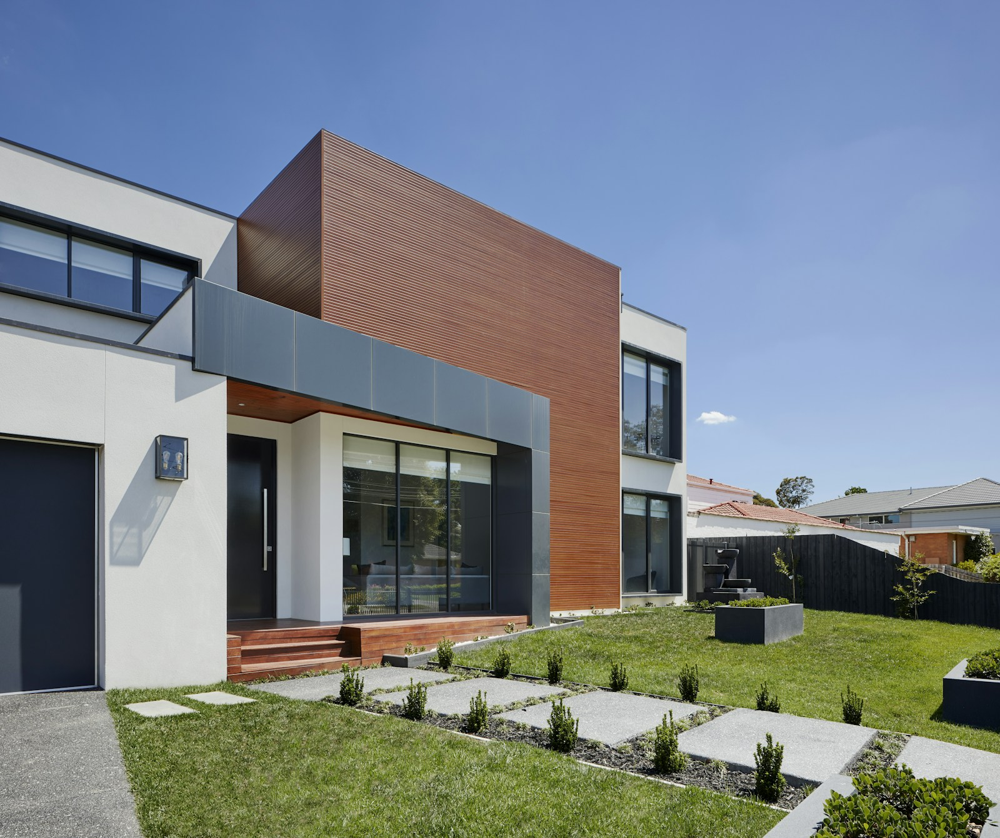
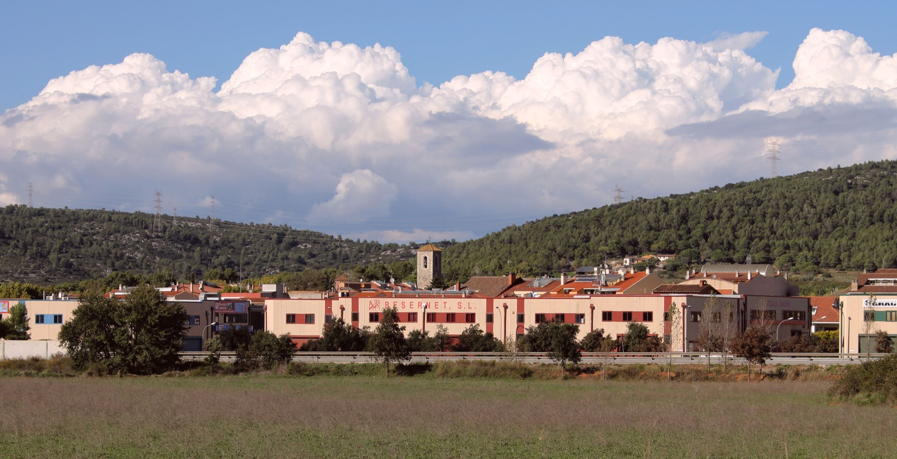
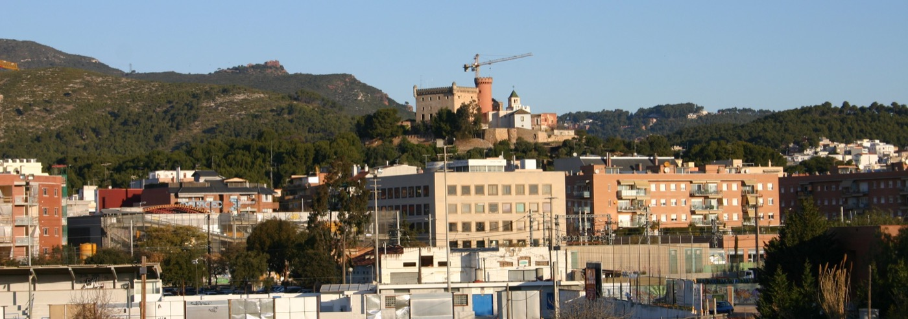
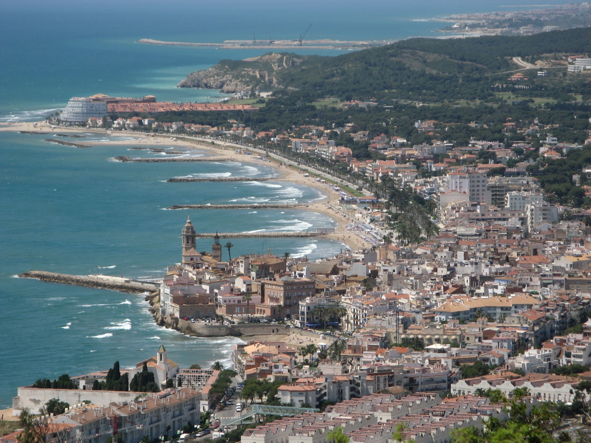

La búsqueda.
Definimos contigo la zona, las necesidades y el presupuesto. Seleccionamos viviendas según tus criterios y te acompañamos en las visitas.
- Tu forma de vivir
- Selección de opciones
- Visitas acompañadas

Tu hogar en el Baix Llobregat y el Garraf.
Nosotros te acompañamos hasta encontrarlo.

Definimos contigo la zona, las necesidades y el presupuesto. Seleccionamos viviendas según tus criterios y te acompañamos en las visitas.
Miramos la vivienda en profundidad. Analizamos su situación legal y técnica para que conozcas sus posibilidades y sus riesgos antes de decidir.
Te acompañamos durante la negociación y la compra. Contarás con orientación profesional para valorar opciones de financiación y dar los siguientes pasos.
Montaña, ciudad o Mediterráneo.
¿Dónde te ves?

El espacio y el ritmo de la montaña, con Begues como punto de partida.
Buscar aquí
Conecta tu casa con el trabajo, los servicios y lo que forma parte de tu día.
Buscar aquí
El Mediterráneo cerca. Exploremos la ubicación que encaja con tu próxima etapa.
Buscar aquíTe acompaña como comprador: define contigo la búsqueda, selecciona opciones y analiza la vivienda antes de que decidas. Aprados te orienta durante el proceso de compra.
Podemos hablar de la vivienda que has encontrado y del acompañamiento que necesitas para valorar sus posibilidades y riesgos antes de comprar.
Trabajamos en el Baix Llobregat y el Garraf, con base en Begues. Cuéntanos dónde quieres vivir para valorar tu búsqueda.
Empezamos por conocer tu situación y el alcance del acompañamiento. Los honorarios y las condiciones se concretan contigo antes de contratar.
Una conversación para poner tu búsqueda en marcha.